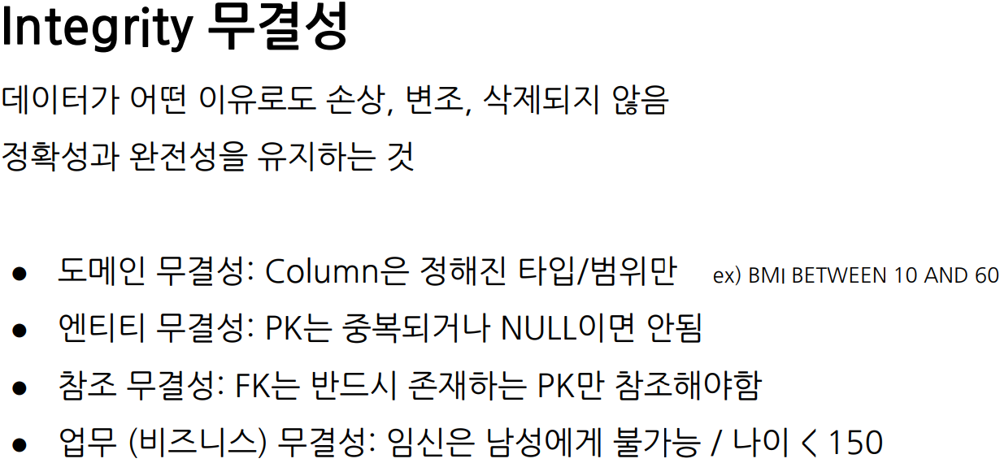
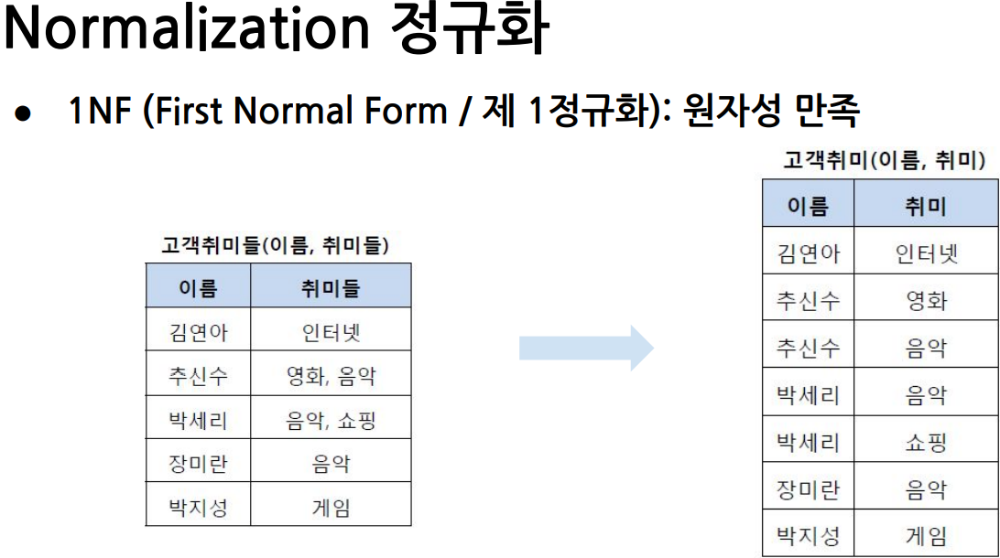
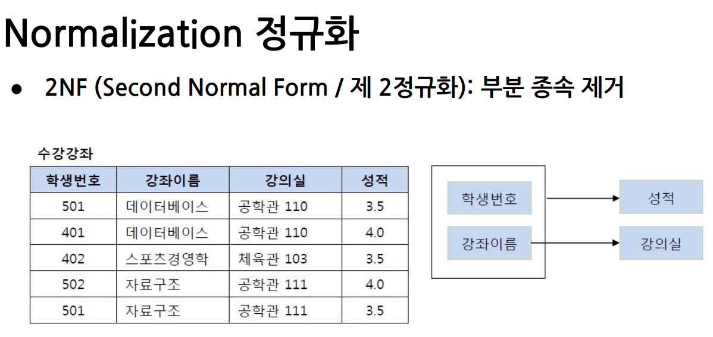
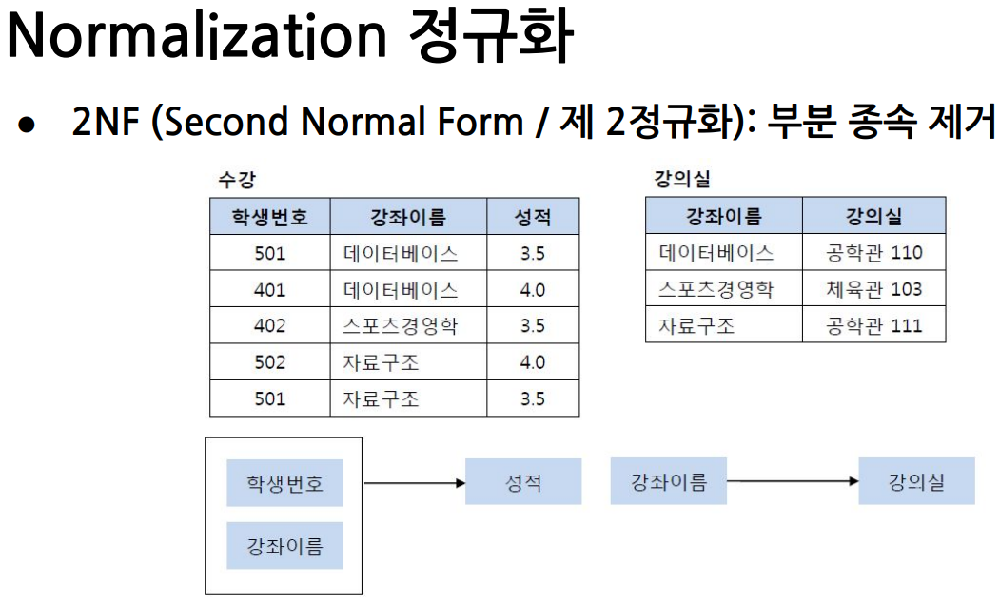
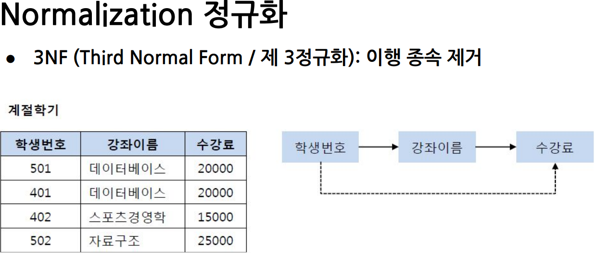
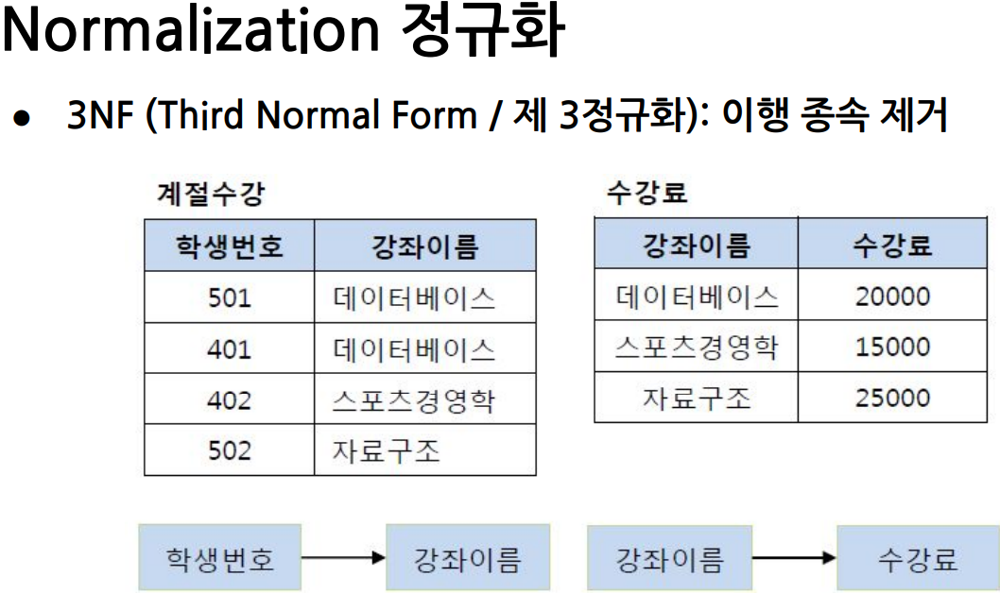
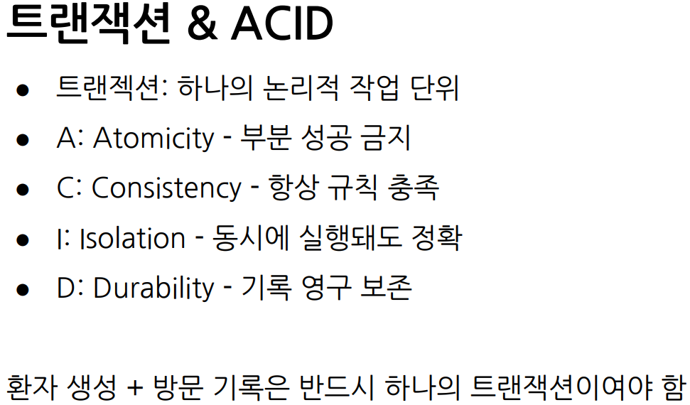

무결성(Integrity) · 데이터베이스 정규화(1NF, 2NF, 3NF) · 트랜잭션(ACID) · SQL 기초

무결성(Integrity)이란 쉽게 말해
데이터가 어떤 이유로도 손상, 변조, 삭제되지 않고 정확성과 완전성을 유지하는 것을 뜻합니다.
무결성의 4가지 핵심 원칙
1. 도메인 무결성 (Domain Integrity)
각 칸(Column)에는 미리 정해둔 조건(타입, 범위)에 맞는 값만 들어가야 한다는 규칙입니다. 예시: BMI 수치는 10에서 60 사이의 숫자만 입력 가능하도록 제한합니다.
(갑자기 BMI 칸에 '정상'이라는 글자가 들어가면 안 되겠죠?)
2. 엔티티 무결성 (Entity Integrity)
데이터를 고유하게 식별하는 기본키(PK)는 절대 중복될 수 없고, 비어있어서도(NULL) 안 된다는 규칙입니다. 예시:회원가입 시 '아이디(PK)'가 똑같은 사람이 2명이거나, 아예 아이디가 없는 회원은 존재할 수
없습니다.
3. 참조 무결성 (Referential Integrity)
다른 테이블을 가리키는 외래키(FK)는 반드시 부모 테이블에 실제로 존재하는 기본키(PK) 값만 가져다 써야 한다는
규칙입니다. 예시: 학생이 '데이터베이스' 과목을 수강 신청하려면, 학교의 전체 강좌 목록에 '데이터베이스'라는 과목이 실제로 존재해야만 합니다.
(없는 유령 과목을 참조할 수 없음!)
4. 업무 (비즈니스) 무결성
현실 세계의 상식이나 실제 업무 규칙에 데이터가 맞아야 한다는 규칙입니다. 예시:성별이 남성인데 데이터에 임신 여부가 등록될 수 없거나,
환자의 나이가 150살을 넘을 수 없도록 막는 것입니다.
📦 제1정규화 (1NF)

1NF의 핵심인 '원자성(Atomicity)'은 딱 이 한 문장으로 정리됩니다.
👉 "하나의 칸(Cell)에는 반드시 더 이상 쪼갤 수 없는 '단 하나의 값'만 들어가야 한다!"
1. 문제가 되는 상황 (제1정규화 전)
강의 교안에 있는 [고객취미들] 테이블을 상상해 볼까요?
이름
취미들
김연아
인터넷
추신수
영화, 음악 🔴 값 2개!
박세리
음악, 쇼핑 🔴 값 2개!
장미란
음악
박지성
게임
🚨 무엇이 문제일까요?
검색 지옥:
만약 "취미가 '음악'인 사람을 다 찾아줘!"라고 명령하면, 데이터베이스는 한 칸에 '음악'만 딱 있는 사람은 쉽게 찾지만,
'영화, 음악'처럼 섞여 있으면 텍스트를 하나하나 뜯어봐야 해서 검색 속도가 엄청나게 느려집니다.
수정 지옥:
박세리 선수가 쇼핑에 흥미를 잃어서 '쇼핑'만 지우고 싶다면?
'음악, 쇼핑'이라는 글자를 통째로 꺼내서 문자를 지우고 '음악'만 다시 넣어야 합니다.
(아주 번거롭고 에러가 나기 쉽죠 🤦♂️)
💡 요약
제1정규화(1NF)는 "콤마(,)나 리스트 형태로 한 칸에 여러 값을 때려 넣은 복잡한 데이터를 찾아내서,
각각 고유한 한 줄(Row)씩 차지하도록 깔끔하게 분리해 주는 작업"입니다.

🧩 제2정규화 (2NF)
강의 교안을 바탕으로 제2정규화(2NF)가 무엇인지 아주 쉽게, 차근차근 풀어서 설명해 드릴게요.
제2정규화(2NF)의 핵심은 딱 한 줄로 요약할 수 있습니다.
👉 "기본키(PK)가 여러 개로 묶여있을 때, 그중 일부에만 의존하는 얌체 같은 컬럼을 밖으로 빼내는 것 (부분 종속 제거)"
이해를 돕기 위해 교안에 있는 예시를 하나씩 뜯어보겠습니다.
1. 문제가 되는 상황 (제1정규화만 된 상태)
먼저 정규화를 하기 전 원래 테이블인 [수강강좌] 테이블을 상상해 보겠습니다.
컬럼은 다음과 같이 구성되어 있습니다.
📋 컬럼 목록: 학생번호, 강좌이름, 강의실, 성적
이 테이블에서 한 줄(Row)의 데이터를 완벽하게 식별하려면 기본키(Primary Key)가 무엇이 되어야 할까요?
'학생번호' 하나만으로는 성적을 알 수 없습니다. (501번 학생이 무슨 과목 성적인지 모르니까요)
'강좌이름' 하나만으로도 성적을 알 수 없습니다. (데이터베이스 과목을 누가 들었는지 모르니까요)
결국 (학생번호 + 강좌이름) 두 개를 하나로 묶어야만 비로소 특정 학생의 특정 과목 '성적'을 알 수 있습니다.
이렇게 두 개 이상의 컬럼이 묶인 키를 복합키라고 합니다.
2. '부분 종속'이란 무엇인가? (문제 발견)
자, 이제 각각의 일반 컬럼들이 기본키인 (학생번호 + 강좌이름)과 어떤 관계인지 살펴볼게요.
성적: "누가(학생번호), 무슨 과목(강좌이름)"을 들었는지 둘 다 알아야 성적이 나옵니다.
(정상 🟢)
강의실: '데이터베이스'라는 강좌의 강의실이 어딘지 아는 데 '학생번호'가 필요할까요? 아닙니다.
학생이 누구든 상관없이 '강좌이름'만 알면 '강의실'이 어딘지 알 수 있습니다.
이렇게 묶음 기본키 중 일부(여기서는 강좌이름)에만 의존해서 값이 결정되는 현상을
'부분 함수 종속'이라고 부릅니다.
3. 왜 분리해야 할까? (문제점)
만약 이대로 둔다면 어떤 일이 벌어질까요?
'데이터베이스' 과목의 강의실이 '공학관 110'에서 '공학관 200'으로 바뀌었다고 가정해 볼게요.
그러면 데이터베이스를 수강하는 모든 학생의 데이터(행)를 다 찾아서 강의실을 하나하나 수정해 주어야 합니다.
100명이 듣는다면 100번을 고쳐야 하는 번거로움과 실수가 발생할 수 있습니다.

4. 제2정규화 해결책 (테이블 분리)
해결책은 간단합니다. 묶음 기본키 중 일부에만 의존하는 컬럼을 별도의 테이블로 분리(독립)시켜 주는 것입니다.
교안의 화면처럼 두 개의 테이블로 쪼개게 됩니다.
① [수강] 테이블 (오직 학생과 성적에만 집중)
컬럼: 학생번호(PK), 강좌이름(PK), 성적
설명: 성적은 학생번호와 강좌이름 둘 다에 완벽하게 의존합니다. (완전 함수 종속)
② [강의실] 테이블 (강좌에 대한 정보만 관리)
컬럼: 강좌이름(PK), 강의실
설명: 강의실은 강좌이름 하나에만 의존하므로, 강좌이름을 기본키로 하는 새 테이블을 만듭니다.
💡 요약
제2정규화는 "테이블의 기본키가 두 개 이상 묶여있을 때, 두 개 모두에 영향을 받지 않고 한쪽에만 기대어 있는 컬럼을 쫓아내서 새로운 집(테이블)을 만들어 주는
과정"입니다.
이렇게 분리해 두면, 나중에 강의실이 바뀌어도 [강의실] 테이블에서 딱 한 줄만 수정하면 되기 때문에 데이터 관리가 훨씬 깔끔해집니다.
🔗 제3정규화 (3NF)

👉 "기본키(PK)가 아닌 일반 컬럼들끼리 눈이 맞아 의존하는 '다단계 관계'를 끊어내고 밖으로 분리하는 것"
1. 문제가 되는 상황
교안에 있는 원래 테이블인 [계절학기] 테이블을 상상해 보겠습니다.
이 테이블의 기본키는 학생번호입니다.
501번 학생이 무슨 과목을 듣지? 👉 데이터베이스
데이터베이스 과목의 수강료는 얼마지? 👉 20000원
2. '이행 종속'이란 무엇인가? (문제 발견)
여기서 컬럼들 간의 의존 관계(누가 누구에게 영향을 받는지)를 살펴보면 재미있는 꼬리물기가 발생합니다.
학생번호 ➡️ 강좌이름: 학생이 정해지면 무슨 과목을 듣는지 알 수 있습니다.
강좌이름 ➡️ 수강료: 기본키가 아닌 일반 컬럼들끼리의 관계입니다.
수강료는 학생이 누구냐에 따라 달라지는 게 아니라, '어떤 강좌인지'에 따라 결정됩니다.
결과적으로 학생번호 ➡️ 강좌이름 ➡️ 수강료 형태의 다단계(A ➡️ B ➡️ C) 릴레이션이 만들어집니다.
이를 수학적 용어로 '이행 함수 종속(Transitive Dependency)'이라고 부릅니다.
쉽게 말해 "친구의 친구" 같은 관계죠.
3. 왜 분리해야 할까? (문제점)
이런 다단계 관계를 한 테이블에 그대로 두면 또다시 수정 지옥(갱신 이상)이 열립니다.
수정 이상:'데이터베이스' 수강료가 20,000원에서 30,000원으로 올랐다면?
데이터베이스를 듣는 501번, 401번 학생의 데이터를 다 찾아서 하나하나 수강료를 고쳐야 합니다.
삽입 이상:새로 '인공지능(수강료 40000원)' 과목을 열었는데, 아직 수강 신청한 학생(학생번호)이 없다면?
기본키인 '학생번호'가 비어있을 수 없기 때문에(엔티티 무결성 규칙)
새 과목을 테이블에 등록조차 할 수 없습니다.
4. 제3정규화 해결책 (테이블 분리)
해결책은 이 다단계를 끊어버리고, 일반 컬럼끼리 종속된 부분(강좌이름 ➡️ 수강료)을 떼어내서
별도의 '가격표' 테이블로 독립시켜 주는 것입니다. 교안의 화면처럼 두 개로 쪼갭니다.

💡 요약
제3정규화는 "테이블 내에서 대장(기본키)이 아닌 부하 직원(일반 컬럼)들끼리 짬짜미로 묶여있는 관계를 찾아내서, 독립된 새 테이블로 분리해 주는
과정"입니다.
이렇게 분리(A ➡️ B, B ➡️ C)해 두면, 수강료가 오르거나 내릴 때 [수강료] 테이블에서 딱 한 줄만 수정하면 되고,
아직 수강생이 없는 새 과목도 [수강료] 테이블에 미리 등록해 둘 수 있어서 아주 효율적인 데이터베이스가 완성됩니다!
⚡ 트랜잭션 (Transaction)

1. 트랜잭션(Transaction)이란?
교안에 적힌 대로 "하나의 논리적 작업 단위"를 뜻합니다. 말이 조금 어려울 수 있는데,
쉽게 말해 "쪼개질 수 없는 세트 메뉴" 혹은 "운명 공동체"라고 생각하시면 됩니다.
교안 맨 아래에 아주 좋은 예시가 있네요!
👉 "환자 생성 + 방문 기록은 반드시 하나의 트랜잭션이어야 함"
상황: 새로운 환자가 병원에 와서 접수를 합니다.
작업 1: DB에 '새로운 환자 정보'를 생성합니다.
작업 2: DB에 그 환자가 오늘 '방문했다는 기록'을 남깁니다.
만약 작업 1은 성공했는데, 갑자기 컴퓨터가 꺼져서 작업 2가 실패했다면 어떻게 될까요?
DB에는 왔는지 안 왔는지 알 수 없는 유령 환자 정보만 덩그러니 남게 됩니다.
반대로 작업 2만 성공하면 누구의 방문 기록인지 알 수 없게 되죠.
그래서 이 두 작업은 "둘 다 성공하거나, 아니면 둘 다 아예 실패한 걸로 치자(처음으로 되돌리자)!"라고 하나로 단단히 묶어버립니다.
이렇게 묶인 작업의 덩어리를 '트랜잭션'이라고 부릅니다.
2. ACID (트랜잭션이 지켜야 할 4가지 절대 원칙)
안전한 트랜잭션을 위해 데이터베이스가 반드시 지키는 4가지 특징의 앞 글자를 딴 것입니다. (아주아주 중요한 개념입니다!)
🅰️ A: Atomicity (원자성) - "부분 성공 금지"
의미: 트랜잭션 안에 묶인 작업들은 "All or Nothing" (전부 성공하든가, 전부 실패하든가)
이어야 합니다.
예시 (계좌이체): 제가 친구에게 1만 원을 보냅니다.
내 통장에서 1만 원 빼기 (성공 🟢)
친구 통장에 1만 원 넣기 (실패 🔴)
이때 "부분 성공"을 허용하면 제 돈 1만 원은 공중분해 됩니다.
원자성은 이런 일이 발생하면 "전부 실패로 처리하고 내 통장에 다시 1만 원을 돌려놔! (Rollback)"라고 명령하는 원칙입니다.
의미: 트랜잭션이 성공적으로 끝났다면, DB는 방금 전 우리가 배웠던 '무결성(규칙)'을 여전히 잘 지키고 있는
상태여야 합니다.
예시: '통장 잔고는 마이너스(-)가 될 수 없다'는 규칙 (도메인 무결성)이 있다고 해볼게요.
잔고가 5천 원인데 1만 원을 출금하려는 트랜잭션이 들어오면, 이 규칙이 깨지게 되므로 DB는 이 트랜잭션을 거절해버립니다.
ℹ️ I: Isolation (고립성/격리성) - "동시에 실행돼도 정확"
의미: 여러 개의 트랜잭션이 동시에 막 쏟아져 들어와도, 서로 간섭하지 않고 마치 혼자서 순서대로 처리되는
것처럼 작동해야 합니다.
예시: 인기 아이돌의 콘서트 예매를 생각해보세요. 마지막 남은 1자리를 두고 저와 친구가 0.001초의 오차도 없이 동시에 "결제"를
눌렀습니다.
이때 DB가 혼란에 빠져 두 명 모두에게 똑같은 자리를 예매해주면 대참사가 납니다.
고립성은 한 사람의 결제(트랜잭션)가 완전히 끝날 때까지 다른 사람의 접근을 잠시 대기시켜서 정확하게 처리되도록 막아줍니다.
🇩 D: Durability (지속성) - "기록 영구 보존"
의미: 트랜잭션이 "완벽하게 성공했어!(Commit)"라고 도장을 찍었다면,
그 직후에 정전이 되거나 서버가 폭발해도 그 결과는 DB에 영원히(안전하게) 남아있어야 합니다.
예시: 은행 앱에서 "이체 완료" 화면을 분명히 봤는데, 1초 뒤에 은행 서버가 다운되었다고 해서 이체 내역이 사라지면 안 되겠죠?
성공한 데이터는 하드디스크 같은 곳에 영구적으로 안전하게 기록해둔다는 원칙입니다.